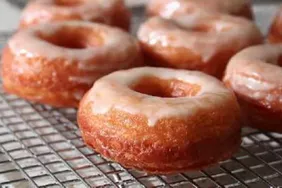

Cronuts

Cronuts... like donuts, but with more cro...
Cronuts are the doughnuts that make people go nuts! They have the shape and flavor of a doughnut, yet feature the crispy, flaky texture of a buttery croissant. In Part I, I'll show you how to make the dough; in Part II, we'll fry, eat, and analyze.
Ingredients
- Flour
- Butter
- Milk
- Crow
- Sugar
- Cinnimon
- Cooking oil
Steps
- Mix flour, milk, sugar, and crow in bowl to make dough.
- Roll out dough, laminate with butter.
- Cut into donut shapes.
- Fry in oil.
- Sprinkle with sugar and Cinnimon while hot.
- Enjoy!